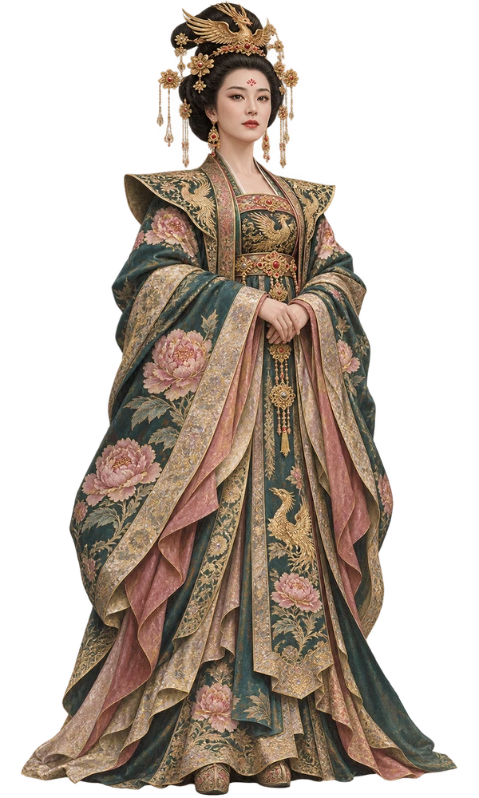
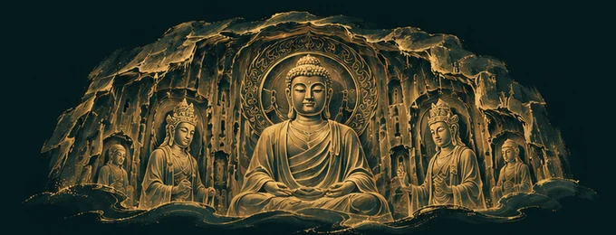

武则天带你游洛阳 · 落地渲染检查（真实 WXML + 真实 WXSS）
01 启动页
启动页
武周 · 洛阳
神都筑影

女皇邀你，共览神都洛阳
02 游历选择 · 第二折
游历选择 · 第二折
‹
武周 · 神都游历
请与朕选定本次游历
依照想走的顺序勾选景点
壹
时长
贰
景点
叁
启程
第二折 · 5 站
重选时长
景点勾选
已选
5
/ 5
1
应天门
2
明堂
3
天堂
4
九洲池
5
龙门石窟奉先寺
＋
上阳宫
＋
定鼎门天街
1
应天门
2
明堂
3
天堂
4
九洲池
5
龙门石窟奉先寺
启程入神都
03 对话页
对话页
第 1 / 3 站
应天门
本地导览
游历地图
1
应天门
2
明堂
3
天堂
暂停
播放中 · 口型随音轨
12 / 19 秒
且随朕先看应天门。它和明堂、天堂、九洲池都在隋唐洛阳城的宫城区。站在这座门前，不妨想一想，宫城的尺度是如何被一扇门展示出来的。
你
这里有什么传说？
武则天
民间传说卢舍那大佛依朕的面容雕成。此说流传甚广，现有材料能确认的是出资记录，面容原型仍无定论。
此站故事
问传说
发送
04 游历地图
游历地图
神都 · 点位
游历地图
景点坐标为参考点位，出行前请核对实际入口。
第 2 站
明堂
打开听卷
1 应天门
2 明堂
3 天堂
4 九洲池
5 奉先寺
时代变迁
明堂为武周布政之宫，号万象神宫，证圣元年毁于火后重建为通天宫。北宋以后渐废，遗址于 20 世纪下半叶经考古确认，其上建成遗址保护展示厅，中心柱坑作原状陈列。
今天 · 周边
食
西工一带的浆面条、糊涂面等本地小吃铺子集中。
游
与天堂同属隋唐洛阳城国家遗址公园，可联游。
我的位置
请在微信设置中允许定位，或直接查看景点。
打开定位设置
05 听卷
听卷
神都 · 听卷
龙门石窟奉先寺

继续
女皇 · 语音讲解
7 / 19 秒
此站讲解
底稿
随朕到伊水边看奉先寺。像龛记记下朕为皇后时，曾出脂粉钱两万贯助造。你眼前的卢舍那像龛，在唐高宗上元二年完工。
来源
ir.pku.edu.cn
传说
非正史
民间传说卢舍那大佛依朕的面容雕成。此说流传甚广，现有材料能确认的是出资记录，面容原型仍无定论。
来源
www.edb.gov.hk